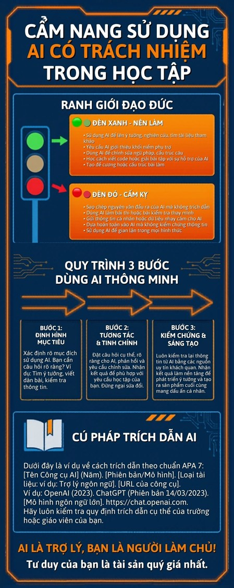

Thiết lập khung tham chiếu đạo đức là điều kiện tiên quyết khi cộng tác với AI trong môi trường học thuật chuyên nghiệp 2026. Sinh viên cần vận dụng tư duy phản biện để đảm bảo tính chính danh và sự minh bạch của tri thức.
Vận dụng bộ tiêu chí để đối soát chéo (cross-check) đầu ra của AI với các giáo trình và tiêu chuẩn IEEE/ISO hiện hành nhằm hạn chế tối đa sự thiên lệch (Bias Mitigation) trong các đề xuất thuật toán từ trí tuệ nhân tạo.
Phân tích phản biện về thách thức đạo đức và giải pháp đề xuất:

Thách thức: Thiên lệch thuật toán (Algorithmic Bias) thông qua việc ưu tiên các giải pháp phổ kiến nhưng không tối ưu cho bối cảnh địa phương; và rủi ro xâm phạm quyền sở hữu trí tuệ vô tình khi AI tái hiện mã nguồn bản quyền. Sự phụ thuộc quá mức có thể dẫn đến "mù quáng thuật toán", nơi sinh viên chấp nhận các sai số hệ thống.
Giải pháp: Triển khai quy trình "Human-in-the-loop", nơi con người giữ vai trò quyết định cuối cùng. Sinh viên được khuyến nghị sử dụng kỹ thuật Prompt thách thức (Challenge Prompting) để buộc AI bộc lộ các giới hạn của nó, đồng thời phối hợp với các công cụ kiểm tra đạo văn và AI-detection để tự giám sát tính học thuật.